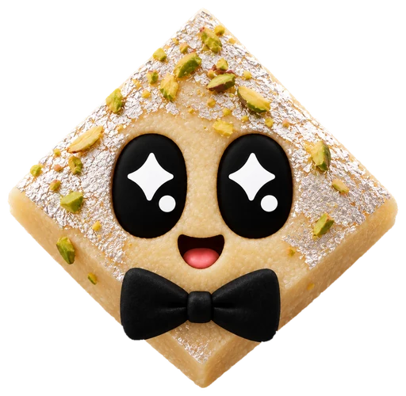

Reads the room
The thread, or the channel messages before your tag, plus whatever’s attached: images, PDFs, zips, documents and voice notes.
Hi, I’m laddu ਲੱਡੂ
Tag @laddu in a channel, a thread or a DM. It reads the conversation, does the work on its own little computer, and answers right there in the thread.
Every step shows up live, in plain words. (The three dots stayed. They’re family.)
What it does
The thread, or the channel messages before your tag, plus whatever’s attached: images, PDFs, zips, documents and voice notes.
Ask for a CSV, a chart, a Word doc, a spreadsheet, a PDF or a slide deck, and it lands in the thread.
Who you are and how you like answers, without you saying “remember this”. It can look back through your past conversations, and writes itself little how-tos when it works something out.
Connect once and it reads and acts in Azure DevOps and Microsoft 365 (mail, calendar, OneDrive, SharePoint, Teams, Planner) as you, seeing only what you can.
Hand it a task on Azure Repos or AWS CodeCommit. It works on its own branch, runs the repo’s checks and opens a pull request as you.
Reminders and recurring work, like “every Monday at 9, summarize #sales”. It can DM people for you, too.
Its own little computer
Each person who tags laddu gets their own computer: a desktop with a browser, files that stick around between conversations, and the internet. laddu clicks and types its way through the things no API reaches.
Codex on your ChatGPT plan, or OpenCode’s free models. Everyone chooses their own on laddu’s Home tab, along with the model and how hard it thinks.
The mithai gang
Well, technically it does. But these four keep it company.
Goes round in circles so you don’t have to.

Sharp edges, silver lining.
Soaks up every last detail.
Soft, squishy, always bounces back.
Bring it home
laddu runs on a Linux server with systemd. The installer adds Docker and Bun if they’re missing, then sets everything up.
curl -fsSL https://laddu.wtf/install.sh |
sh
Already have Bun and Docker?
bun create laddu does the same.
Send one command in Slack and type back the code it shows.
Open a link on any device. On a server, paste back the address the browser ends on.
Its name, who can use it, Docker or not, a public address, and the model.
It starts as a service and DMs you when it’s up. At first it answers only you.